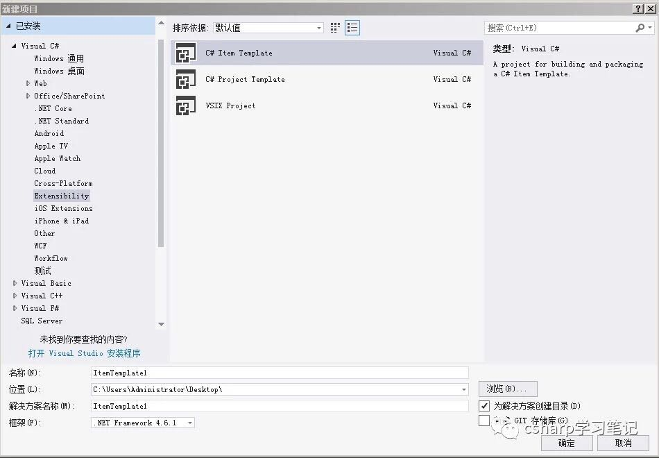

原文连接:https://www.cnblogs.com/cxytt/p/10855331.html
上次我们创建了控制台应用程序，今天我们就谈谈如何创建桌面应用程序。
第一步、我们打开VS2017，出现如下界面（此界面前面我们已讲过，这里就不再谈论了）：

第二步、单击“文件（F）--->新建（N）--->项目（P）...”就弹出“新建项目”对话框，其界面如下：

第三步、在此对话框中选择“Visual C#--->Windows 桌面--->WPF 应用（.NET Framework）”，并且选择好文件保存的路径（即界面的“位置”），最后单击“确定”按钮即可创建控制台应用程序，其界面如下：
第四步、单击屏幕左边的工具箱选项卡，选择常用WPF控件中的button控件，然后在主窗口上面空白处拖动鼠标，这样在显示界面中就出现了button按钮控件，其界面如下：
与此同时主窗口界面下XAMl代码中也新增了一条语句（此语句是描述按钮控件的，我们暂时不管它，今后会学到的）：<Button Content="Button" HorizontalAlignment="Left" Height="68" Margin="241,122,0,0" VerticalAlignment="Top" Width="76"/>
第五步、双击刚才绘制的按钮，系统会自动转到对应的cs文件，并自动添加按钮单击事件处理程序
private void Button_Click(object sender, RoutedEventArgs e)
{
}
第六步、在刚才事件处理程序上手工输入一个语句MessageBox.Show("hello world!");
第七步、单击工具面板的“启动”图标（或者按F5），系统就自动生成exe文件并开始运行，在运行界面上单击按钮，就会弹出一个对话框，其界面如下：
到此为止，一个完整的桌面应用程序就完成了。
刚才创建的应用程序与其他窗口的行为方式相同----可以移动、重新设置大小、最小化等，创建的应用程序不必编写大量代码就能实现教复杂的功能（如界面绘制、控件的显示等），并且双击主窗口的控件（控件是用户界面构件），IDE就会自动为我们添加默认事件（事件是面向对象编程术语，今后会谈及到）。
在刚才的操作中我们只处理了两个文件：CS文件和xaml文件，其中cs文件是专门控制程序的执行，xaml文件是显示程序的界面，他显示的xaml代码是在WPF应用程序中定义用户界面的语言。
而我们的WPF应用程序是微软推出的基于Windows 的用户界面框架，属于.NET Framework 3.0的一部分。它提供了统一的编程模型、语言和框架，真正做到了分离界面设计人员与开发人员的工作；同时它提供了全新的多媒体交互用户图形界面。凭借更灵活、更强大的方式创建桌面应用程序，从而取代windows forms的地位。
本程序我们添加了一个按钮，按钮具有许多属性，从按钮颜色大小的简单格式，到某些模糊设置（如数据绑定设置，它可以建立与数据联系），应有尽有，改变属性通常会直接改变代码。